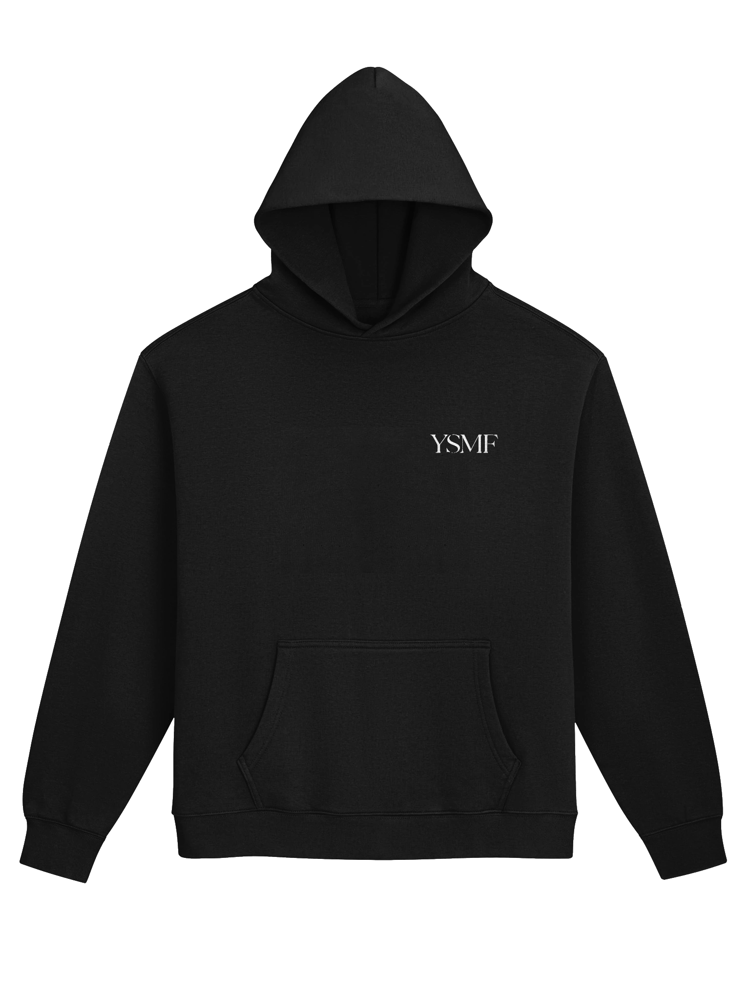
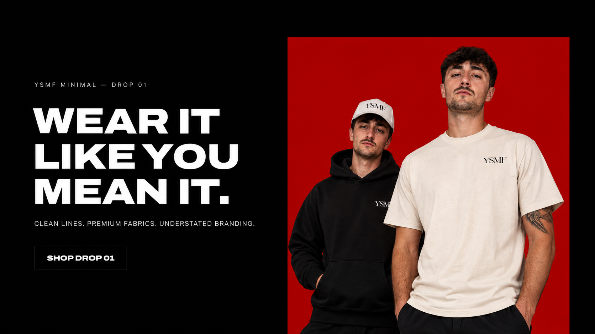
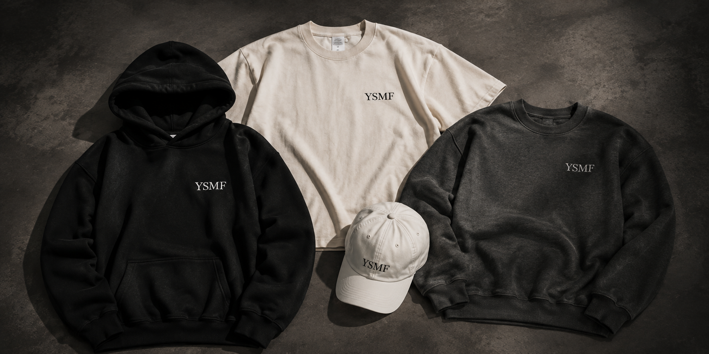
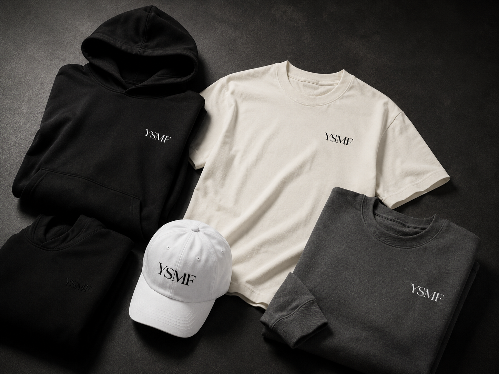
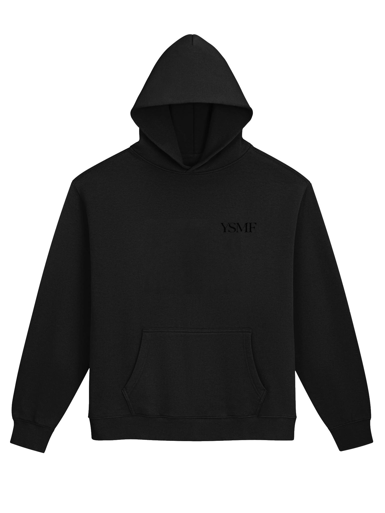
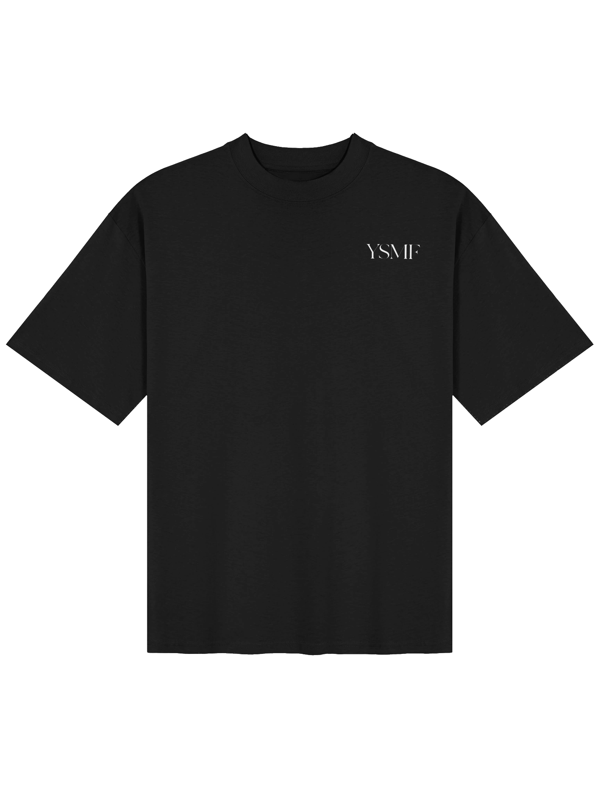
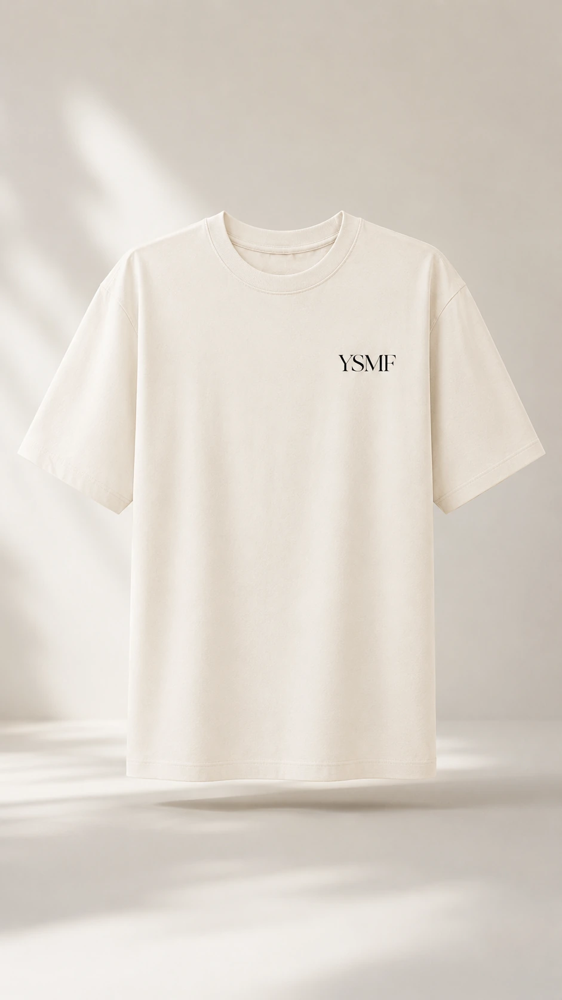
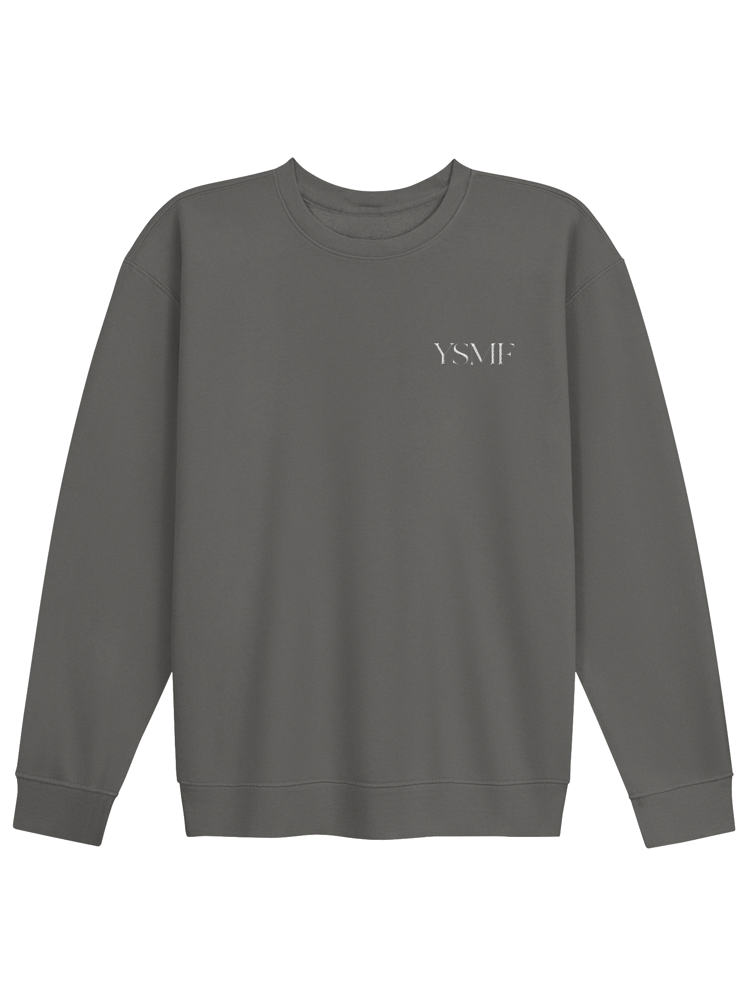
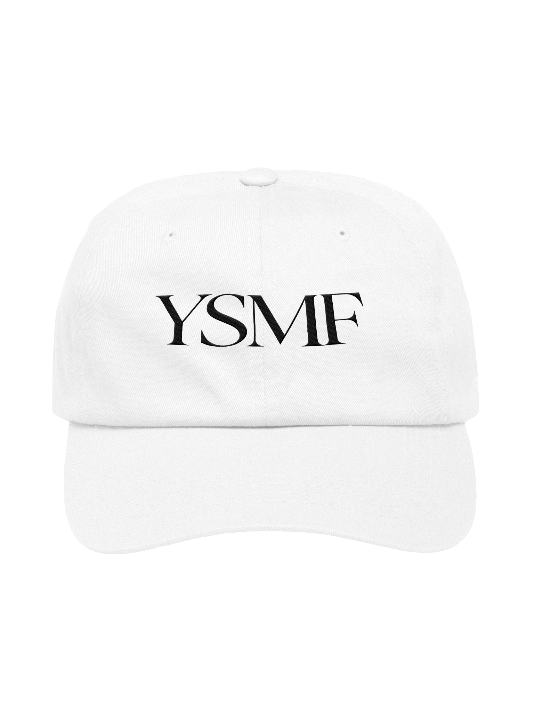

Black Hoodie — White YSMF
Drop 01Wear It Like You Mean It. The collection is being prepared behind the scenes.

YSMF
Clean lines. Premium-feeling pieces. Understated branding.
A six-piece first drop built around clean silhouettes, neutral tones and understated YSMF branding. Premium everyday streetwear without unnecessary noise.


Built around hoodies, tees, a crewneck and a clean dad hat, Drop 01 is designed to feel wearable every day while keeping the YSMF identity sharp and controlled.
A cinematic look at YSMF Minimal — clean silhouettes, understated branding and the first six pieces of Drop 01.
Preview cards are shown while the Fourthwall collection is private. On launch day these disappear and the live Fourthwall product cards take their place automatically.

Black Hoodie — White YSMF
Drop 01
Black Tonal Hoodie
Drop 01
Black Tee — White YSMF
Drop 01
Cream Tee — Black YSMF
Drop 01
Pepper Crewneck
Drop 01
White Dad Hat
Drop 01Wear It Like
You Mean It.